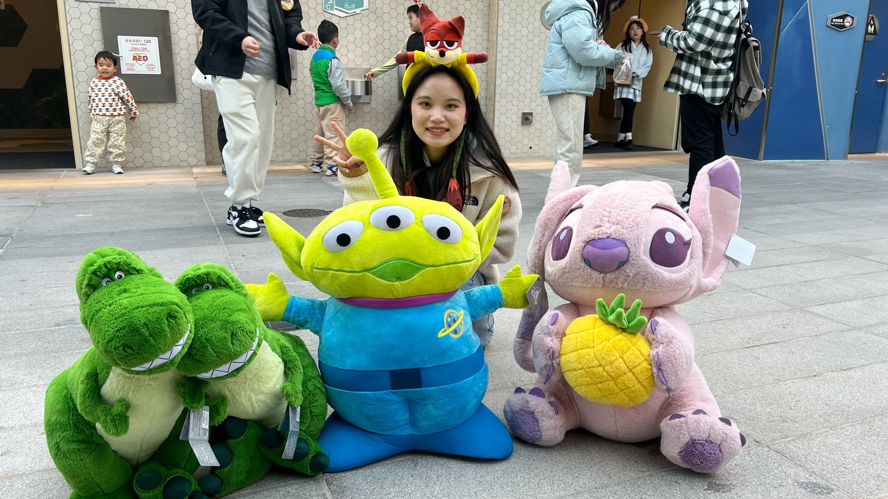
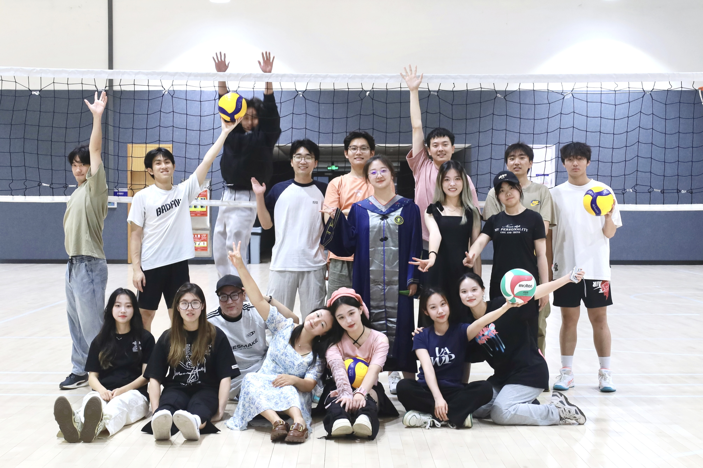

Joy Li
About Me关于我
Hi, I’m Joy. I study computer science at the University of Minnesota, Twin Cities, and create games and interactive experiences.你好，我是 Joy，目前在明尼苏达大学双城分校学习计算机科学，也在创作游戏与互动体验。
Culture as a Starting Point从文化兴趣出发
Traditional Chinese clothing, architecture, music, and history have fascinated me since childhood. Wearing hanfu and visiting places such as Sanxingdui are personal ways of exploring that interest. I am drawn to the objects themselves, but also to the people, beliefs, and stories behind them.中国传统服饰、建筑、音乐与历史从小就吸引着我。穿汉服、参观三星堆，都是我亲近这些兴趣的方式。我喜欢文物本身，也好奇它们背后的人、观念与故事。
These interests shape what I want to create. In White Snake, I bring opera music and a traditional story into rhythm play; in The Taste Reviver, I use recipe puzzles to explore food and family memories. I want players from different backgrounds to connect with culture through actions and emotions they can experience for themselves.这些兴趣也影响着我的游戏创作。《白蛇传》把戏曲音乐与传统故事融入节奏操作，《味觉复原师》则通过配方解谜连接食物与家庭记忆。我希望不同背景的玩家能够通过亲自参与的行动与情感，走近这些文化。
Why I Create Games为什么选择游戏
I am drawn to stories with complex characters and different perspectives. I want to understand why people make different choices, and how their relationships change through cooperation, conflict, and compromise. Games let me turn that curiosity into situations players can take part in: listening, choosing, responding, and discovering what happens next.我喜欢人物关系丰富、视角各异的故事，也关注不同立场与选择背后的原因，以及关系如何在合作、冲突与妥协中发展。游戏让我能把这份好奇转化为玩家可以参与的情境：倾听、选择、回应，再发现接下来会发生什么。
My creative goal is to make participation meaningful. Whether players are following a musical encounter or recovering a forgotten recipe, I want their actions to help them feel a connection to the story and the people within it.我的创作重点，是让参与本身具有意义。无论是跟随音乐经历一场相遇，还是找回一道遗忘的配方，我都希望玩家通过自己的行动，与故事及其中的人物建立联系。

Sharing Experiences with Others和大家一起玩
Outside my projects, I enjoy spending time and playing volleyball with friends. Sharing an activity with people who have different personalities is part of what I enjoy about being together. That interest in shared experiences also informs the spaces I hope to create through games.项目之外，我喜欢和朋友们一起玩、在排球社打球。和性格不同的人共同参与一件事，是我享受相处的一部分。这份对共同经历的兴趣，也影响着我希望通过游戏创造的空间。
